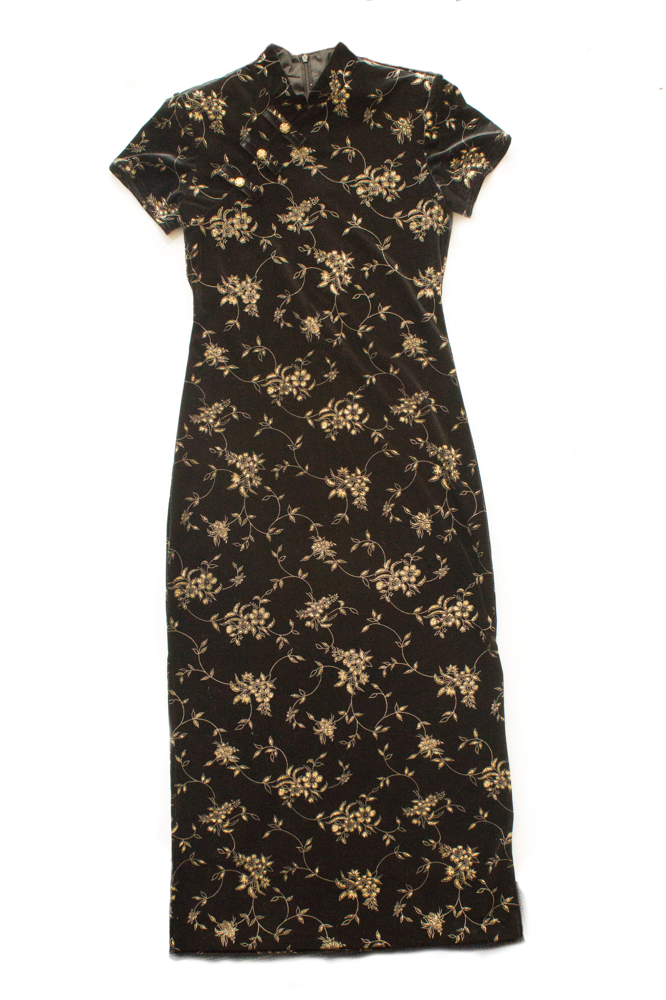

In the smoky corner of the crowded sweatshop, one young girl in a stunning velvet dress stands out. She coughs into her elbow and wipes away a bead of sweat on her forehead, before going right back to work. Her expert hands weave in and out of the fabric as she glances up at the clock, hoping that she can finish this dress before the end of the work day. Shifting in her seat, she tries to get comfortable despite being in such a confined and hot space. As she finishes sewing the last seam on the collar, she stands up and all of a sudden, all eyes are on her. The sunlight beaming through the window shines right on her gorgeous qi-pao, a traditional chinese dress, and the gold accents shine bright, momentarily bringing brightness, hope, and beauty into the factory. As she turned around to face her peers, she received countless compliments and looks of awe, mixed with a few glances of jealousy. While going to bring her finished dress to the factory manager, she looks down and realizes that the dress she has made in 5 minutes was exactly the same as the one she had saved money for two years to buy. She realizes in that moment that she is reflecting exactly the mindset that is forcing her and her colleagues to work in such terrible environments. Her longing for a moment of glamour parallels that of her customers, craving beauty in moments, and driving the fast fashion industry.